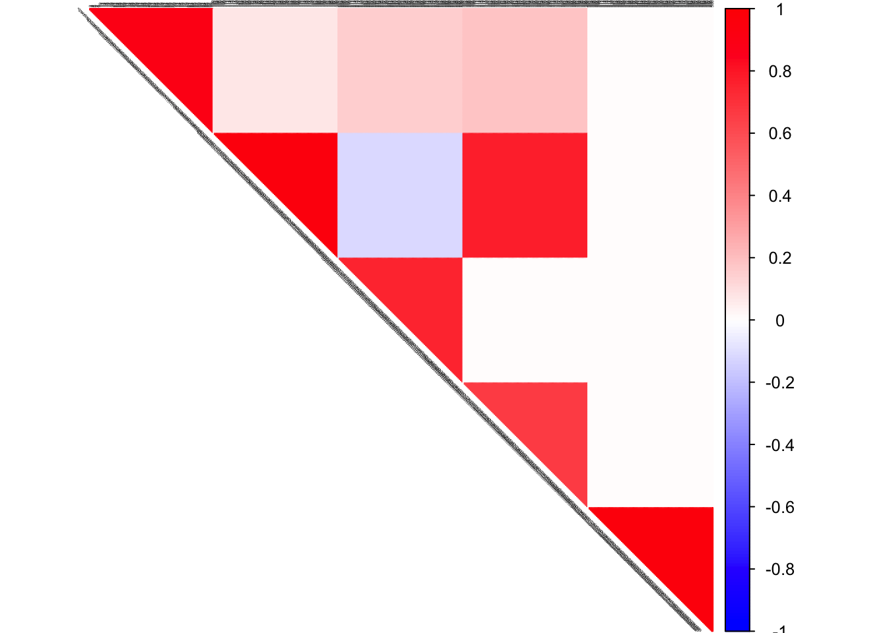
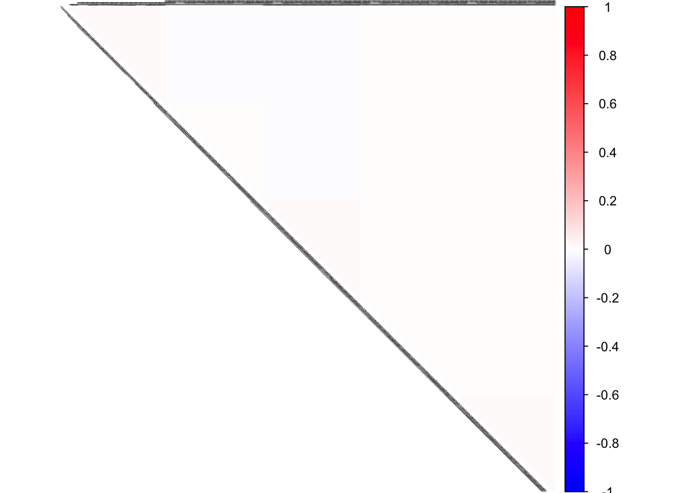
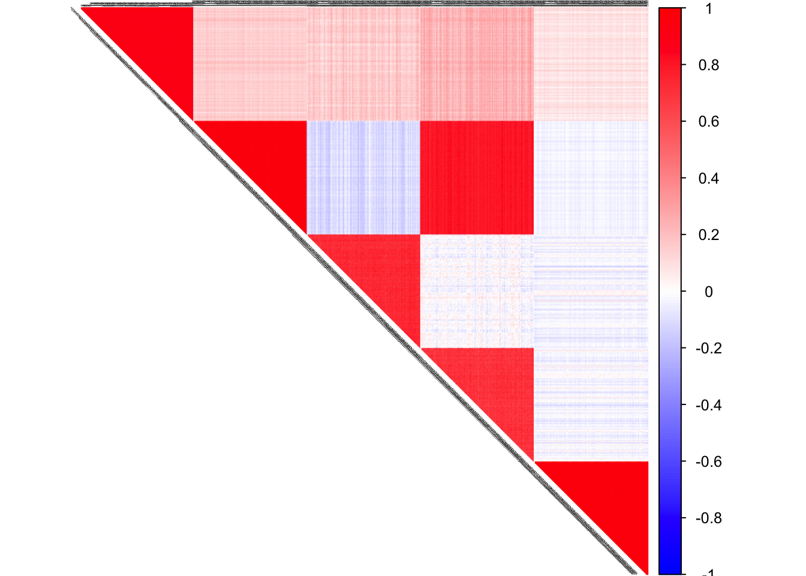
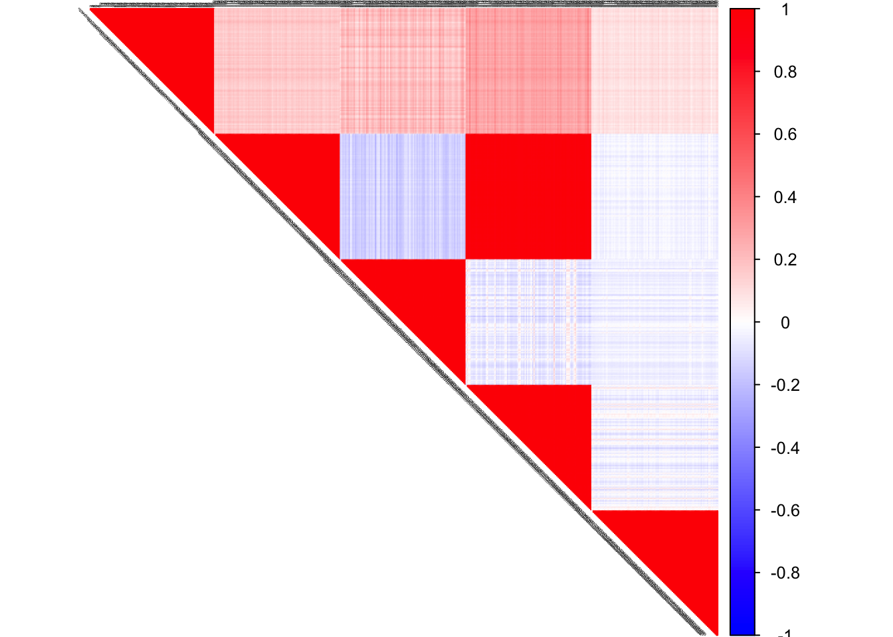
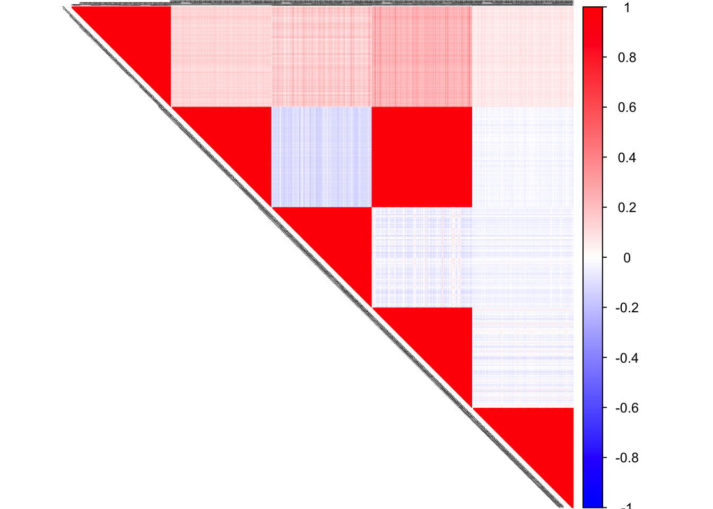

In this script, we investigate if for low rank correlation matrices with noise, if FLASH and CorShrink together does a better job than FLASH and CorShrink alone.
library(CorShrink)
library(glasso)
library(Matrix)
library(pracma)
library(corrplot)
library(corpcor)
library(flashr)We simulate from a low rank hub correlation population structure model.
rep.row<-function(x,n){
matrix(rep(x,each=n),nrow=n)
}
rep.col<-function(x,n){
matrix(rep(x,each=n), ncol=n, byrow=TRUE)
}
L <- rbind(rep.row(c(2, -2, 0, 1, 0), 100),
rep.row(c(0, 1, 3, 3, 0), 100),
rep.row(c(0, -1, 1, -1, 0), 100),
rep.row(c(0, 0, 1, 1, 0), 100),
rep.row(c(0, 0, 0, 0, 5), 100))
F <- t(cbind(rnorm(200, 0, 1), rnorm(200, 0, 1), rnorm(200, 0, 1),
rnorm(200, 0, 1), rnorm(200, 0, 1)))
E <- matrix(rnorm(dim(L)[1]*dim(F)[2], 0, 1), nrow = dim(L)[1])
data = t(L%*%F + E)
covSigma <- L %*% t(L) + diag(1, dim(L)[1])
#covSigma <- t(F) %*% F
corSigma <- cov2cor(covSigma)
pcorSigma <- cor2pcor(corSigma)
S <- cov(data, method = "pearson")col2 <- c("blue", "white", "red")
corrplot(corSigma, diag = FALSE,
col = colorRampPalette(col2)(200),
tl.pos = "td", tl.cex = 0.2, tl.col = "black",
rect.col = "white",na.label.col = "white",
method = "color", type = "upper")
col2 <- c("blue", "white", "red")
corrplot(pcorSigma, diag = FALSE,
col = colorRampPalette(col2)(200),
tl.pos = "td", tl.cex = 0.2, tl.col = "black",
rect.col = "white",na.label.col = "white",
method = "color", type = "upper")
col2 <- c("blue", "white", "red")
corrplot(cov2cor(S), diag = FALSE,
col = colorRampPalette(col2)(200),
tl.pos = "td", tl.cex = 0.2, tl.col = "black",
rect.col = "white",na.label.col = "white",
method = "color", type = "upper")
flash_out <- flash(data, Kmax = 100, tol = 0.001,
var_type = "constant")## fitting factor/loading 1## fitting factor/loading 2## fitting factor/loading 3## fitting factor/loading 4## fitting factor/loading 5flash_project <- flash_out$EL%*%t(flash_out$EF)
corrplot(cor(flash_project), diag = FALSE,
col = colorRampPalette(col2)(200),
tl.pos = "td", tl.cex = 0.2, tl.col = "black",
rect.col = "white",na.label.col = "white",
method = "color", type = "upper")
flash_corshrink <- CorShrink::CorShrinkData(flash_project,
ash.control = list(control=list(maxiter=1000)))
normal_corshrink <- CorShrink::CorShrinkData(data,
ash.control = list(control=list(maxiter=1000)))corrplot(flash_corshrink$cor, diag = FALSE,
col = colorRampPalette(col2)(200),
tl.pos = "td", tl.cex = 0.2, tl.col = "black",
rect.col = "white",na.label.col = "white",
method = "color", type = "upper")
corrplot(normal_corshrink$cor, diag = FALSE,
col = colorRampPalette(col2)(200),
tl.pos = "td", tl.cex = 0.2, tl.col = "black",
rect.col = "white",na.label.col = "white",
method = "color", type = "upper")normal_corpcor <- corpcor::cor.shrink(data)## Estimating optimal shrinkage intensity lambda (correlation matrix): 0.0283flash_corpcor <- corpcor::cor.shrink(flash_project)## Estimating optimal shrinkage intensity lambda (correlation matrix): 0.0214D <- dim(normal_corpcor)[1]
mean(sqrt((as.matrix(normal_corshrink$cor) - as.matrix(corSigma))^2)) ## corshrink## [1] 0.02997655mean(sqrt((as.matrix(flash_corshrink$cor) - as.matrix(corSigma))^2)) ## flash + corshrink## [1] 0.07451512mean(sqrt((as.matrix(normal_corpcor[1:D,1:D]) - as.matrix(corSigma))^2)) ## corpcor## [1] 0.03993607mean(sqrt((as.matrix(flash_corpcor[1:D, 1:D]) - as.matrix(corSigma))^2)) ## flash + corpcor## [1] 0.08506321mean(sqrt((as.matrix(cor(flash_project)) - as.matrix(corSigma))^2)) ## flash## [1] 0.09262195This R Markdown site was created with workflowr